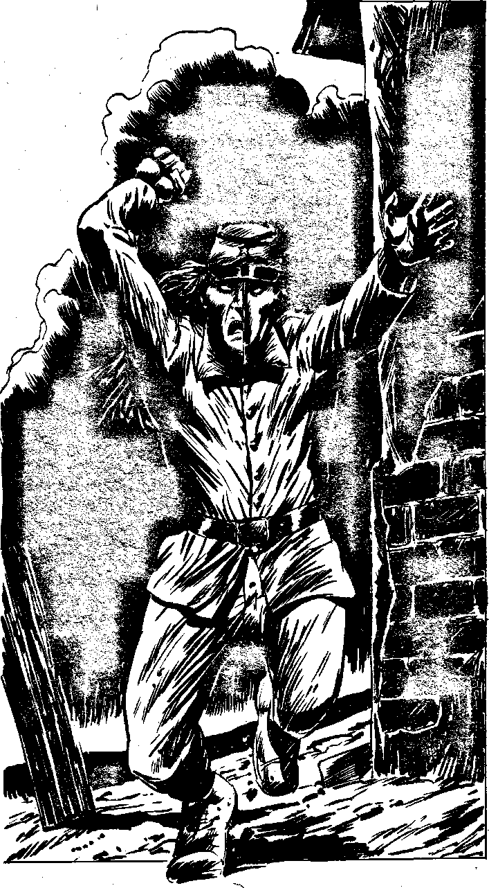

386
[Score a G]
Together you leave the hill. There is a pause in the battle; both sides are tired and the day's fighting is virtually over. You walk past groups of exhausted and wounded men, artillery batteries, field hospitals and so on. It is all very confused as far as you can make out. No one challenges you and soon you are behind Ewell's Command Post, a small building on the outskirts of Gettysburg. Ewell is sitting at its front. He has lost a leg and the stump is obviously paining him. Eventually, a courier on horseback arrives, with orders from General Lee. Both you and Lynx tense expectantly. As soon as General Ewell has read them, your Psychic Awareness tells you that Yelov is exerting his will from inside the house. You both decide to use your Power of Will on Yelov simultaneously. He is taken by surprise, but Yelov recognises that you are with Lynx and his hatred of you gives him added strength of will. He throws your mental attack aside, but Ewell is now unaffected at any rate. Suddenly, Yelov bursts out around the corner of the house. You stand stock still for a moment, a prickly chill of fear running up your spine. As far as you are concerned, the last time you saw Yelov he was dead at your feet. To see him alive like this is disturbing, even though you knew you never really killed him, due to a puzzling time paradox. His cybernetic arm gleams in the falling light as he raises it to smash you, shouting: 'At last Falcon, I'll see you dead!' You must try to dodge the blow. Make an Evasion Roll.
| 6,7,8,9,10,11,12 | Turn to 408 |
| 2,3,4,5 | Turn to 417 |